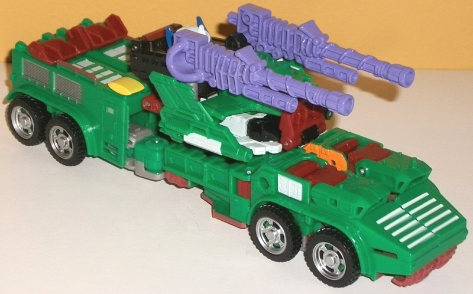
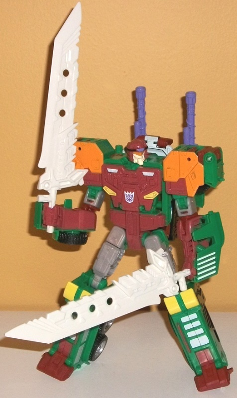
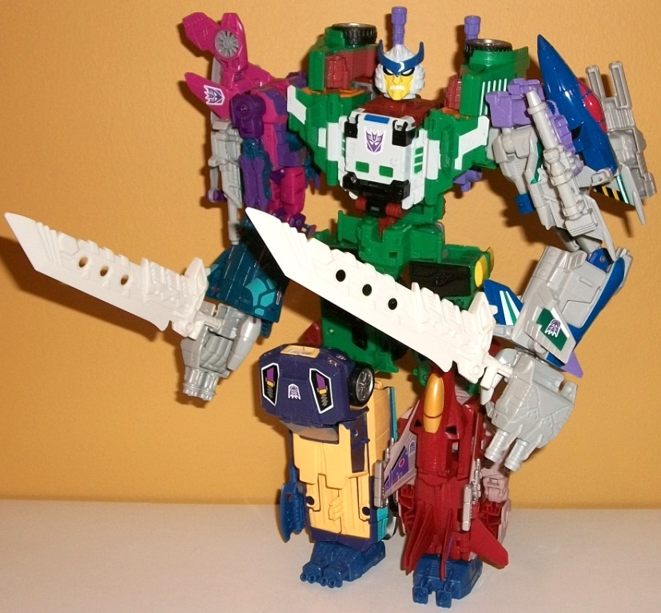

Decepticon
Bludgeon (w/ review of Thunder Mayhem) [TFCC 2016 Subscription Service
Exclusive]
Decepticon
Bludgeon (w/ review of Thunder Mayhem) [TFCC 2016 Subscription Service
Exclusive]
Decepticon
Bludgeon


Allegiance
: Decepticon
Size
: Voyager
Difficulty of Transformation to Robot
:
Easy
Difficulty of Transformation to Torso
:
Medium
Color Scheme
: Vibrant moderately
light forest green, moderately dark muddy brown, black, and some light
glossy purple, light pale yellow, bone gray-white, dark glossy navy blue,
orange, silver, bone yellowish-white, white, and light milky glittery gray
Individual Rating
: 9.5
(NOTE: Because this is a repaint, this is
not a full-blown review. This mainly covers any changes made to the mold
and the color scheme, and merely compares it to Combiner Wars Hot Spot.
For a review on the mold itself, read the review of Combiner Wars Hot Spot
here
.)
Bludgeon's gotten several
different toys over the past decade or so, but all of them have primarily
homaged his G1 Pretender shell in robot mode, while taking his "inner"
robot's tank vehicle mode instead. Well, not for this version-- in BOTH
modes, this version of Bludgeon homages the inner robot of the G1 Pretender.
And thanks to FunPub, Bludgeon has got a VERY eye-catching scheme. An extremely
vibrant (but not bright) shade of forest green is used that is quite frankly
hard to stop staring at, and the main contrast color for it is a muddy
brown, which of course makes Bludgeon look rather "earthy" and thus fits
a tank. There's a bit of light milky gray plastic in there too on his upper
arms and legs that is unfortunately that boring milky color shade, but
there's at least a little bit of glitter in there to spice things up slightly.
Beyond these basic colors, Bludgeon also has a TON of accent colors that
put pretty much every other toy in even THIS subscription service to shame
(except for perhaps
Grabuge
). He's got silver
on his black tires, a good deal of black on the sides of his lower legs
that become his combiner upper legs, some more black on his gestalt chest,
and some more silver on the grills on the side of his vehicle mode. More
interestingly, he's got a good deal of a few shades of bone white-- homaging
his Pretender shell at least a little, I guess-- on his robot face and
some parts of his chest, much of his gestalt chest and head, and in lines
and squares along several areas of his vehicle mode, such as vents and
panels and the like. The white goes EXTREMELY well with the already wonderful
forest green, and is my favorite color combo on this toy. There's some
orange on his robot mode shoulder pads and visor to help differentate that
mode a little more from the others, and a bit of pale yellow on his lower
chest (approximating headlights), and some of that same yellow on his actual
lights. He's got a really nice shade of light purple used on his cannons
as well, and his face sculpt is very well-colored with a brown helmet,
black stripe along the forehead, and a purple "jewel" in the middle. Really,
there's nothing about Bludgeon's color scheme I don't love (other than
the light gray plastic). He's a cornucopia of colors, and there's no area
that's too one-tone on him due to all the paint apps. It should be noted
that, due to the chest cavity,
Windsweeper's
Matrix of Malice can be stored in Bludgeon's chest in his normal robot
mode, though otherwise he can't interact with it.
Bludgeon has a few mold
changes; a new robot headsculpt for one, which as I mentioned before is
painted marvelously, but also is sculpted marvelously as well. I love the
long angular chin and that we finally get a toy of him with his inner robot's
face. He also comes with a new gestalt head sculpt, which we'll get to
shortly, and two gigantic swords, which come from a Japanese train version
of Optimus Prime. They certainly fit Bludgeon well and look wicked, although
a bit too large proprtionally. Unfortunately he has the same misassembly
in the middle of his legs that some other version of this mold like
Pyra
Magna
have, but at least it's an easy fix and doesn't break the toy
easily.
Thunder
Mayhem (Combination of Decepticon Bludgeon, Spinister, Needlenose, Grabuge,
and Windsweeper)

Allegiance
: Decepticon
Individual Rating
: 8.9
Thunder Mayhem is the
combination of nearly all of the TFSS 4.0 figures. A Pretender for the
torso,
two
Double
Targetmasters for the arms, and two Triggercons for the legs... you don't
think it would work, but combining 5 late '80s Decepticons with such wonderful
color schemes into one massive combiner looks pretty cool. They're definitely
five different toys-- unlike with some combiners, not much effort was done
to really "unify" the color schemes in any meaningful sense. Both of the
hands are light gray and both of the feet are dark aquamarine, and the
former blend in pretty well with the revealed gray on the combiner mode
chest, but that's about it. That said, none of them clash with each other
by any means, and the beautiful forest green of Bludgeon with some light
gray for contrast forms a nice centerpiece to the whole thing. The giant
swords actually look pretty proportional when used in combined mode, as
well. That said, the one thing I DON'T like about Thunder Mayhem is his
new head mold, which is Thunderwing, with a very "Marvel Comics-esque"
look to him, what with the black rings around the eyes and all that. The
actual sculpting is quite well done, with the dark blue head crest, the
bone white head, the yellow face-- it all looks like it's lifted right
out of the '80s comics. The only iffy thing from a sculpting perspective
is that if you look at the head strictly from a side-on view, it's just
a tad too flat because of space considerations in the other modes (it's
blatantly obvious in Bludgeon's vehicle mode, unfortunately). However,
I'm not a fan of having the combiner mode be a completely different established
character that was never a combiner. I think it would've made more sense
if the combined head had instead been Bludgeon's Pretender skull face,
perhaps with a few minor details from the other members mixed in. Thunderwing
as a whole combiner just doesn't work for me if none of the components
are actually Thunderwing.
Bludgeon Bio:
MOTTO: "Something speaks inside me,
a great being ready to lash out."
For as long as he can remember, Bludgeon
trained under the greatest martial artists on Cybertron to become the peak
Decepticon in both body and spirit that he is now. While most seasoned
Cybertronians know him for his Metallikato mastery, it's his training in
Crystalocution that truly makes others' gear trains shudder. One strike
from his fingers in the right diode can lead to a total breakdown of the
exoskeleton and snuffing of the spark. Despite the most devoted meditation,
sadly all is not quiet in the mind of this stern warrior. Since finding
the Matrix of Malice, it has been speaking to him. Voices of great anger
echo from another being who once carried the Matrix; a tainted warrior
from Cybertron's past who once tried to use it for his own rage and conquest.
While he is a commanding leader of the Mayhem Attack Squad, his teammates
question his slow descent into madness since his contact with the legendary
artifact.
Bludgeon, when not using his fists,
carries two blades made from Tironium, a metal as strong as its wielder.
Strength: 7.0
Intelligence: 8.0
Speed: 9.0
Endurance: 6.0
Rank: 8.0
Courage: 8.0
Fireblast: 4.0
Skill: 10.0
TFSS 4.0 Bludgeon is
an absolute beaut of a toy, with a dazzling array of colors (that forest
green in particular is spectacular), tons of paint apps, and is a great
homage to the G1 Pretender's inner robot, making this a bit of a different
Bludgeon homage, for those of you who might be tired of Samurai Skeleton
Bludgeon. That said, because of how much of him is dedicated to the combined
Thunder Mayhem mode, I'd recommend him less if you don't want to combine
him than the other TFSS 4.0 figures. But in terms of just being an outstanding-looking
mold... wow. It really shows you how much the right colors can make a toy.
Reviews by Beastbot
Back to BotCon/OTFCC
Exclusives Index